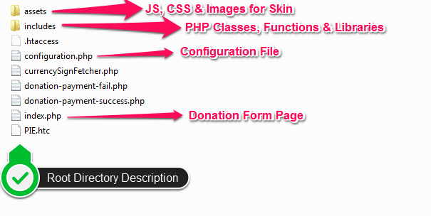
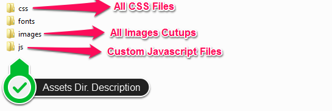
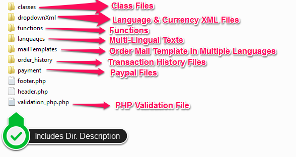

100% responsive online Paypal donation form, EasyDonation is powered by PHP scripts to donate any amount via credit card, bank transfer or PayPal. It has been featured with multiple payment gateways, currency & languages and provide complete transaction history for all failed & successful transactions. Clean & simple design of this lightweight online donation form is coded meticulously using AJAX, jQuery, CSS3 and HTML5 technologies that make online charity donation easy for everyone. This multi-currency donation form supports different payment options & also allows you to multiple online charity donations via Recurring Payment Type. For the successful transaction of any custom or fixed amount, it is the best PayPal online donation form or can say email template.
Transaction History
For admin convenience, this donation email template provides full history of transactions done through bank transfer, credit card & PayPal. Being an admin, you can also filter transaction history to view particular transactions that are successfully done by Credit Card/PayPal/Bank Transfer. Using menu list, you can search every transaction that you want to view. You can even clear the history with "Clear List" button.
EasyDonation online payment script is one of the powerful online donation forms to donate via PayPal and accept donations. Integrate this ready to use donation form with your website, which has been developed by adept professionals.
Considered among the powerful online donation forms, EasyDonation is the best PHP powered donation script for charity donations. PayPal for donations is the most secure payment method. With this outstanding, secure and fast donation form script, an individual can do both type of payment:
Let us write all Comprehensive Features of EasyDonation Form:
Lets understand the file architecture with the help of screenshots which is a more convincing approach rather explaining in simple text only. The screenshots are well annotated so you can better understand the folders & their behavior correctly.

Pic - Donation-Root-Dir.png | This image explains the primary folder structure where all the php files are on root along with the ASSETS folder which is the only directory containing all the JS, CSS, Images & Fonts etc inside.

Pic - assets-directory-description.png | This image explains the ASSETS folder's internal structure. All the sub-directories are described on image with short description.

Pic - Donation-Includes-Dir.png
This is our effort to make sure you understand the files structure before you navigate to any file. So that it may become easy for you to make any customizations at your end. We want to make your purchase as pleasant as possible to best utilize it for your business. But if still you have any queries or doubts which are beyond the whole documentation and don’t answer all then feel free to email us at support@theemon.com or via our ThemeForest.com user page contact form.
EasyDonation Installation is too easy. Only you need to extract & place Script directory at any location. Now you need to run it on browser using path http://domain.com/script-folder-name. It will ask for basic things & after entering script will be ready to use. You can change payment details using configuration.php file. Instruction is written down under manual setup section.
EasyDonation form you can add into your PHP page. For this first of all you need to extract all files at in your project directory. There are some necessary files that you need to include in your PHP page. Here i am explaining all necessary files that you need to include:
<link rel="stylesheet" type="text/css" href="assets/css/reset.css" /> <link rel="stylesheet" type="text/css" href="assets/css/styles.css" /> <link rel="stylesheet" type="text/css" href="assets/css/select.css" />
JS files:
<script type="text/javascript" src="assets/js/jquery.min.js"></script> <script src="assets/js/validation.js"></script> <script src="http://ajax.aspnetcdn.com/ajax/jQuery/jquery-1.11.1.min.js"></script> <script type="text/javascript" src="assets/js/chosen.jquery.js"></script> <script type="text/javascript" src="assets/js/customs.js"></script> <script src="assets/js/jquery.dd.min.js"></script>
<!-- Add Header of your website --> <div class="form-container"> <!--Outer Container Start Here--> <!-- content --> <div class="donate-heading"> <!-- form code --> </div> <div> <!-- Add Footer of your website -->
Now the next step is to set the default language for this form. This you can do by modifying configuration.php file. There you can see the below code:
$defaulLanguage=array( "name"=>"English", "keyword"=>"en" );
To manage the static text of form & messages you need to look at "includes/dropdownXml" directory. There you can see file for each language where we have written constants for each text.
/*************** Global Path ***************/ $serverName= $_SERVER['SERVER_NAME']; $docRoot = $_SERVER['DOCUMENT_ROOT']; /*************** Donation Amount in Radio ***************/ $donationAmount = array(10, 12, 15); // you can add more by comma separated /*************** Email Settings ***************/ $adminEmailId = "example@domain.com"; // Admin email id $fromEmailId = "sales@domain.com"; // outgoings mails from address /*************** Payment methods activate/deactivate ***************/ $paymentMethods = array( 'recurring' => TRUE, // TRUE/FALSE 'paypal' => TRUE, // TRUE/FALSE 'creditCard' => TRUE, // TRUE/FALSE 'bankingTransfer' => TRUE, // TRUE/FALSE 'StripePay' => TRUE // TRUE/FALSE ); /*************** Enable/disable url rewrite ***************/ $rewriteUrl = "On"; // On/Off /*************** Bank Details ***************/ $localBankInfo = array('payableto' => 'Your Company Name', 'bankname' => 'HDFC' , 'accountnumber' => 'xxxxxxxxxxx', 'branchcode' => 'xxxxx', ); $internationalBankInfo = array( 'payableto' => 'Company Name', 'bankname' => 'HDFC' ); /*************** Default language ***************/ $defaulLanguage = array( "name" => "English", "keyword" => "en" ); /*************** Default Currency ***************/ $defaulCurrency = array( "code" => "USD", 'sign' => "$" ); /*************** Paypal Credentials ***************/ $bussinessAccount = "xxxx@domain.com"; // paypal business email Id $paymentMode = 0; // for live use 1 and for sandbox use 0; $apiUserName = "API USER NAME"; $apiPassword = "1401375810"; $apiSignature = "AQU0e5vuZCvSg-XJploSa.sGUDlpAG53Kr0CYpbVbFMhahPdznmsDhIk";
/*************** Stripe GLobal Key Configuration***************/ $Stripe_secreteKey='sk_test_b5EzdFNRohtmWuFtbZwF7bMi'; $stripe_publishableKey='pk_test_gObShk36KPVDgkQfufub6W5k';
We are using minimum style-sheets for EasyDonation Form. If you want to make any modification then you can look at below files under "assets/css" directory:
Please find the brief idea of each css file used in this template:
select.css:- This css file is used for styling the dropdown.
style.css:- This is custom stylesheet for whole tool. You can find body, tabs, textbox, buttons etc css class & id in this file.
reset.css:- The goal of a reset stylesheet is to reduce browser inconsistencies in things like default line heights, margins and font sizes of headings, and so on.
In the EasyDonation form we are importing following js files:
All the Images, JavaSacript, CSS libraries, any Effects which comes with this template are either on GPL or MIT licenses to distribute or modify within proprietary nature or purchased with full rights to share and/or resell. If you’ve purchased Regular License you are just authorized to use this template for single website, it means you are not authorized to distribute, share or resell this template or any items (images, javascripts etc) or even single piece of code.
In case of any query on licensing & usage, feel free to email us at support@theemon.com or via our codecanyon.net user page contact form.
We've used the images, icons or other files from the following sources as listed below
theem'on is handling all technical support for this form so in-case you have any questions related to this theme make sure you are redirected to theem'on only. Read below on how to contact theem'on in case you have any query or concerns related to this template.
If you are looking forward to highly customize this template or willing to do some custom development. We have our custom development team always ready to help you with all your requirements. This will be charged on hourly rate basis, once you request for the job our technical team will get aligned with you over timeline as well as the costing required to do the job. Once you get agree and pay the upfront amount, team will start working on the job. To request a customization or development you can email us at support@theemon.com or via our ThemeForest.com user page contact form.
Thanks for reading the Document we hope it’s been really helpful and resolved most of your concerns. In case you still have doubts related to any section then we are more than happy to assist you on any of your queries for which you can directly email us at support@theemon.com or via our ThemeForest.com user page contact form.
Once again, thank you so much for purchasing our item.
© Copyright 2016, All Rights Reserved by EasyDonation Form.www.theemon.com - theem'on